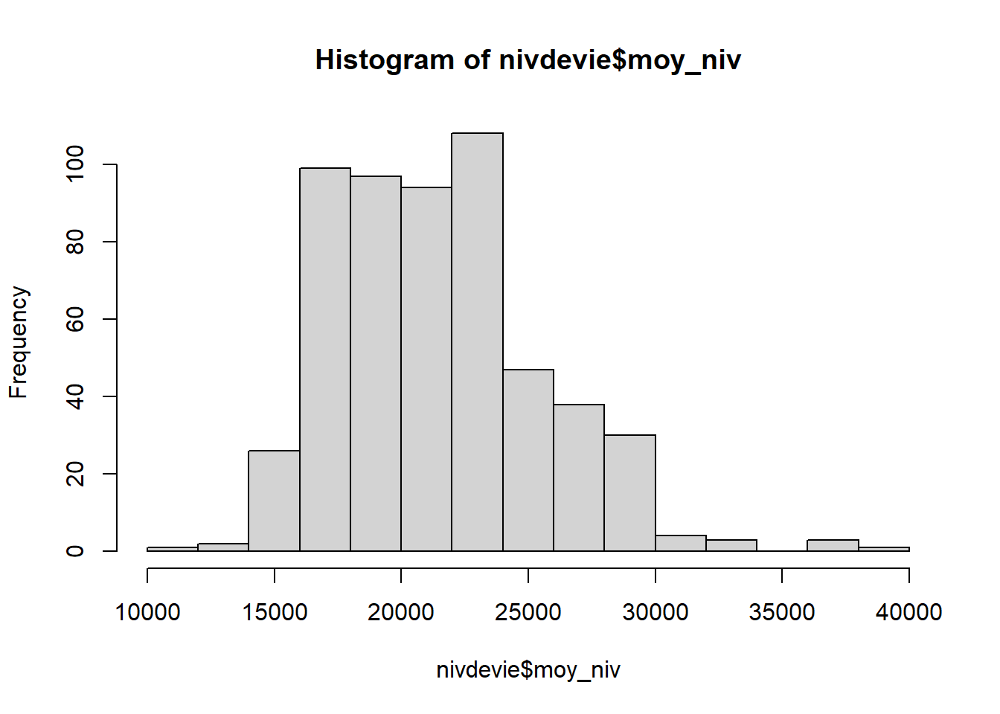
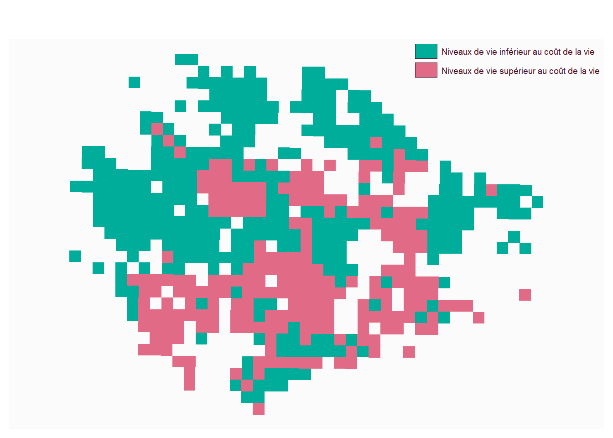
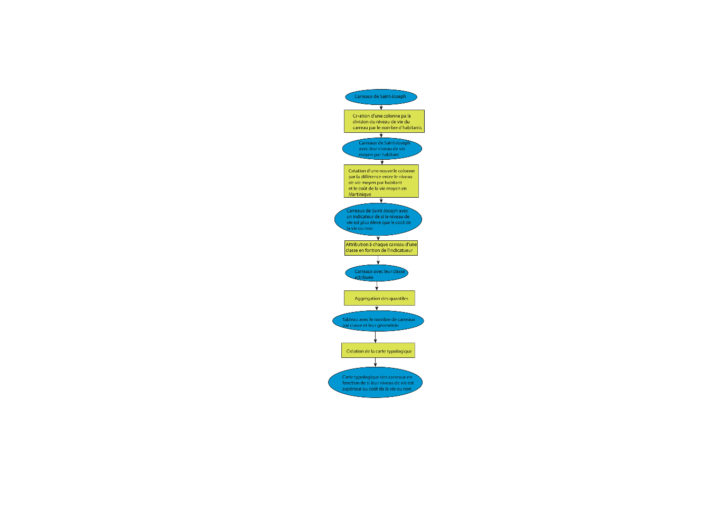

#permet de gérer les gpkg
library(sf)
#permet de faire des maps
library(mapsf)
library(happign)
library(terra)
library(imager)insee <- st_read("insee.geojson")## Reading layer `insee' from data source
## `C:\Users\I J\Documents\Iudig\Licence\L3S6\SIG\iudig.github.io\insee.geojson'
## using driver `GeoJSON'
## Simple feature collection with 553 features and 47 fields
## Geometry type: POLYGON
## Dimension: XY
## Bounding box: xmin: -61.0704 ymin: 14.6416 xmax: -60.99419 ymax: 14.69775
## Geodetic CRS: WGS 84nivdevie <- insee[,c(1:13)]
nivdevie <- nivdevie[,c(1,2,8,13,14)]
nivdevie$moy_niv <- nivdevie$ind_snv/nivdevie$pop_carrhist(nivdevie$moy_niv,
main = "Ditribution du niveau de vie moyen des carreaux de Saint-Joseph",
xlab = "Niveau de vie moyen en €",
ylab = "Nombre de carreaux")
summary(nivdevie$moy_niv)## Min. 1st Qu. Median Mean 3rd Qu. Max.
## 11431 18209 20461 21337 23855 38217L’histogramme permet d’observer la répartition du niveau de vie moyen dans les différents carreaux de Saint-Joseph. Sur l’axe horizontal, on lit le niveau de vie moyen, qui va d’environ 11 000 à 38 000. Sur l’axe vertical, on lit le nombre de carreaux concernés. On remarque que les barres les plus hautes se situent surtout entre 18 000 et 24 000. Cela signifie que la majorité des carreaux ont un niveau de vie moyen situé dans cette tranche. À l’inverse, il y a peu de carreaux avec un niveau de vie très faible, autour de 11 000 à 15 000, ou très élevé, au-dessus de 30 000. Les statistiques confirment cette lecture : la médiane est d’environ 20 461 et la moyenne d’environ 21 337. Ces deux valeurs sont proches, ce qui montre que l’histogramme présente une distribution relativement symétrique. Cependant, le maximum atteint environ 38 217, ce qui montre qu’il existe quand même quelques zones avec un niveau de vie nettement plus élevé. Ainsi, contrairement à l’histogramme des ménages pauvres, les écarts semblent ici moins concentrés : la majorité des zones se situe autour d’un niveau de vie moyen, même si certaines différences territoriales restent visibles.
nivdevie$indicateur <- nivdevie$moy_niv-22284
quantile <- quantile(nivdevie$indicateur, na.rm = T)
nivdevie$indicateur_rapport [nivdevie$indicateur < 0] <- "Niveaux de vie inférieur au coût de la vie"
nivdevie$indicateur_rapport [nivdevie$indicateur > 0] <- "Niveaux de vie supérieur au coût de la vie"
table(nivdevie$indicateur_rapport)##
## Niveaux de vie inférieur au coût de la vie
## 326
## Niveaux de vie supérieur au coût de la vie
## 227rapport2 <- aggregate(nivdevie [, c("indicateur_rapport")], by = list(nivdevie$indicateur_rapport), length)
mf_map(rapport2, type = "typo", var = "Group.1", border= NA, leg_title = "")
Cette carte compare le niveau de vie des habitants au coût de la vie en Martinique.Le coût de la vie a été estimé à 22 284 euros par an pour une personne. Les zones en rose correspondent aux espaces où le niveau de vie est supérieur au coût de la vie, tandis que les zones en vert représentent les espaces où le niveau de vie est inférieur au coût de la vie. On observe que les deux catégories sont réparties sur l’ensemble du territoire, mais avec une organisation spatiale assez marquée. Les zones où le niveau de vie est inférieur au coût de la vie (en vert) sont davantage présentes au nord et dans certaines périphéries de la commune. À l’inverse, les zones où le niveau de vie est supérieur au coût de la vie (en rose) se concentrent davantage au sud et dans des espaces plus centraux.Cette carte met donc en évidence une forme de fragmentation du territoire : certaines zones disposent de conditions de vie plus favorables, tandis que d’autres apparaissent plus vulnérables face au coût de la vie. Cela montre que la pauvreté en Martinique ne peut pas être analysée uniquement à partir du revenu, mais doit aussi prendre en compte les contraintes territoriales et le coût réel de la vie.
image <- load.image("schéma_indicateur.png")
plot(image, axes = FALSE)